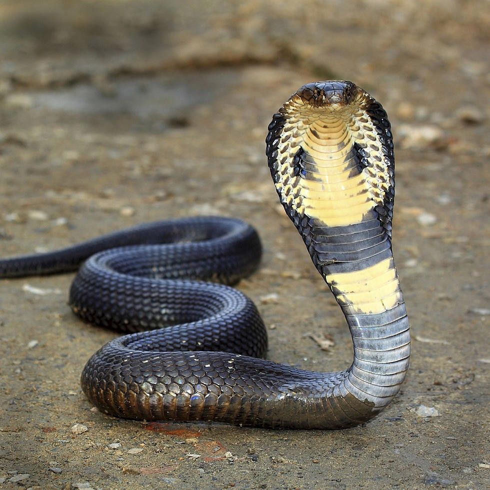

Ular Kobra
Makanan Favorit
Ular kobra memangsa tikus, katak, burung, dan ular lainnya. Mereka menggunakan bisa mematikan untuk melumpuhkan mangsa sebelum menelannya utuh.
Habitat
Ular kobra hidup di hutan, padang rumput, dan daerah pertanian di Asia dan Afrika, termasuk Indonesia (seperti kobra jawa dan kobra sumatra).
Keunikan
Saat merasa terancam, ular kobra bisa mengangkat tubuh bagian depan dan melebarkan lehernya membentuk tudung khas. Mereka juga bisa menyemburkan bisanya ke arah mata predator.